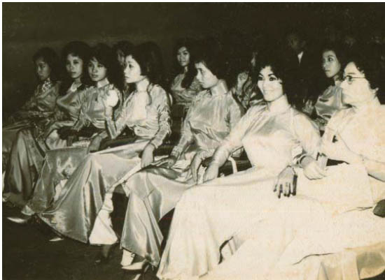

Gã lai đến mỗi tối, ngay khi gã có phiên gác và mọi người Gala đều đã say giấc. Gã mang thức ăn cho Jacob, thỉnh thoảng thậm chí còn có cả một chút rượu thừa mà hoàng tử bỏ lại.
Làm sao người vượt qua được mê cung? Làm sao lão Chanute sống sót trong bang động của người Troll? Người đã bao giờ tìm được một ngọn nến mà ảnh sáng của nó có thể gọi Người Sắt đến chưa?
Trong đêm đầu tiên Jacob chỉ im lặng hoặc bịa bừa ra một câu trả lời nào đó. Đêm tiếp theo anh cảm thấy thật nhàm chán, vì vậy sau mỗi câu trả lời anh lại hỏi ngược lại một câu: Làm sao ngươi tìm ra được bàn tay? Làm sao ngươi biết ngươi có thể tóm ta và cái thủ cấp ở đâu? Ở đâu có loại kỳ nhông ngươi dùng da làm áo khoác chống đạn?
Cùng hội cùng phường.
Gã lai lục túi anh, và khi gã Goyl chà xát chiếc khăn tay vàng giữa những ngón tay đá, lần đầu tiên Jacob mừng vì nó không hoạt động tốt nữa. Nerron. Một cái tên bình thường như bao Goyl khác. Nó có nghĩa là “màu đen” trong ngôn ngữ của bọn chúng. Ai đã đặt cái tên ấy cho gã? Là mẹ gã, để chối bỏ những vân đá khổng tước trên da hắn, hay những người thuộc bộ tộc cẩm thạch đen, những kẻ thường dìm chết con lai của mình? Nerron cũng chăm chú quan sát cả tấm danh thiếp của Earlking, nhưng khi nó nằm trong tay gã, chỉ có một cái tên được in trên đó.
Nerron giơ cao chiếc bút mực Jacob luôn mang theo bên mình, vì nó dễ sử dụng hơn nhiều so với lông chim hoặc những loại bút máy lỗi thời mà người ta dùng ở thế giới sau gương.
“Người ta làm gì với thứ này?”
“Mực ước.” Jacob nhét mấy miếng thịt mà gã Goyl mang đến vào miệng. Nam nhân ngư đã nới lỏng dây trói, bất chấp mệnh lệnh của Louis. Lão Bọ có vẻ là người duy nhất trung thành tuyệt đối với hoàng tử. Dù vậy, tốt hơn hết là không nên đánh giá thấp Louis. Khuôn mặt hắn cũng xảo quyệt y như cha mình, dù chắc chắn hắn chỉ thông minh bằng phân nửa.
“Mực ước?” Gã lai nhét chiếc bút vào túi. “Chưa bao giờ nghe nói đến.”
“Tất cả những điều ngươi viết ra bằng thứ mực ấy, một ngày nào đó sẽ trở thành sự thật.” Một lời nói dối không tồi. Đâu đó ở phía Đông có lẽ có một chiếc lông ngỗng có thể làm được điều đó.
“Một ngày nào đó?”
Jacob nhún vai và chùi sạch mỡ dính trên mấy ngón tay bị trói. “Tùy theo điều ước là gì. Một, hai tuần…”
Cho đến lúc ấy, hy vọng là bọn họ không phải chung đường nữa. Họ đã đi được bốn ngày. Mụ phù thủy giờ này hẳn đã phải trị thương xong cho Donnersmarck, trong trường hợp mụ ta không giết ông hoặc biến ông thành một con côn trùng, nhưng chắc chắn ông sẽ mất mạng nếu anh mang ông theo mà không đợi mụ phù thủy làm phép xong.
Ban đêm họ nghỉ lại trong hang. Gã Goyl luôn tìm ra được một cái hang và Jacob rất biết ơn vì điều đó. Không khí buổi đêm vẫn lạnh cóng dù đã có chiếc chăn mà gã lại mang đến cho anh. Cánh tay anh vẫn đau đớn vì lưỡi dao của mụ phù thủy, và những vết cắt do thanh gươm của Troisclerq gây ra đốt cháy da thịt anh. Nhưng thứ duy nhất cướp đi giấc ngủ của anh chính là việc anh không biết rõ Cáo có được an toàn không. Gương mặt kiệt sức của cô vẫn hiển hiện trước mắt anh. Ngươi đòi hỏi ở cô ấy quá nhiều, Jacob. Quá nhiều. Nỗi sợ hãi là món quà anh thường xuyên dành tặng cô, họ đã cùng nhau trải nghiệm và cùng nhau chinh phục, nhưng luôn luôn đi cùng nỗi sợ. Trong chuồng ngựa của mụ phù thủy họ đã quên đi tất cả. Anh chỉ muốn bảo vệ cô. Nhưng cũng như rất nhiều lần trước đây, cô mới chính là người phải giúp anh.
“Ngươi không ước gì cuộc chiến này chỉ có hai chúng ta sao?” Gã Goyl hạ giọng, dù ba kẻ kia có vẻ đã ngủ say. “Không có hoàng tử, không có lão Bọ, không có nam nhân ngư, không luôn cả Cáo... chỉ có ta và ngươi, chiến đấu với nhau.
“Tên hoàng tử có thể có ích đấy.”
“Để làm gì?”
“Hắn có dòng máu của Guismund. Có lẽ một người phải có dòng máu của Kẻ Tàn Sát Phù Thủy chảy trong huyết quản mới mở được cánh cổng sắt vào lâu đài. Rốt cuộc thì lâu đài ấy đang chờ đợi những đứa con của Guismund...”
“Đúng vậy, ta đã từng nghĩ tới điều đó.” Gã lai ngước nhìn lên mấy con dơi nhúc nhích dưới trần hang. “Nhưng ta ghét ý nghĩ phải dắt theo gã quý tộc ngu ngốc ấy cho đến phút cuối. Không. Phải có một cách khác.”
Jacob nhắm mắt lại. Gương mặt của gã Goyl làm anh nhớ đến làn da ngọc thạch của em trai anh, và điều đó làm anh mệt mỏi. Ngay cả cái hang mà họ đang ở trông cũng giống cái hang mà Will và anh đã cãi nhau trong đó.
Cơn đau lại đột ngột cựa mình trong lồng ngực anh, phải khó khăn lắm anh mới kìm được tiếng thét đang chực trào ra khỏi miệng.
Chết tiệt.
Anh áp bàn tay bị trói lên ngực. Sẽ qua thôi. Sẽ qua thôi. Bao nhiêu lần rồi? Nhớ lại đi, Jacob! Năm. Đây là lần thứ năm. Chỉ còn một lần nữa. Quả tim anh chẳng còn lại mấy.
“Chuyện gì vậy?” Gã lai lo lắng nhìn khuôn mặt rúm ró lại vì đau của anh. “Louis đã đưa thứ gì cho ngươi uống sao?”
Jacob có thể đã bật cười, nếu anh còn đủ hơi để cười. Không phải là một nghi ngờ không có cơ sở. Gia đình hoàng tộc Lothringen có truyền thống hạ độc kẻ thù từ lâu đời.
Gã lai kéo tay anh ra khỏi ngực và xé toạc áo anh. Giờ đây con bướm ma đã đen sì như cẩm thạch trên da Nerron, và viền đỏ viền đôi cánh có những đốm hình đầu lâu của nó trông như máu tươi.
Nerron bước lùi lại, như thể hắn sợ bị lây bệnh.
Jacob kiệt sức tựa người vào vách hang. Cơn đau đã dịu bớt, nhưng chắc hẳn trông anh có vẻ thảm hại lắm. Có phải đây là những gì Hồng Tiên đã vẽ ra trong đầu, khi cô ta thì thầm tên của người chị gái vào tai anh? Có phải cô ta đã tưởng tượng ra cảnh này, khi anh hôn cô ta? Rằng anh sẽ quằn quại như một con thú bị thương, trả giá cho nỗi đau của cô ta bằng cơn đau đớn tột cùng. Chỉ có điều cô ta không thể chết vì trái tim đã tan vỡ.
Cô ta không có tim, Jacob.
Nerron đổ rượu mà gã đã mang đến cho Jacob ra ngoài, rồi rót một thứ chất lỏng màu nâu vào đầy cốc. “Uống chầm chậm thôi,” gã hướng dẫn Jacob trước khi ấn chiếc cốc vào đôi tay đang bị trói của anh. “Ta không chắc là dạ dày của ngươi có thể chịu được rượu của người Goyl không.”
Nó có vị như nham thạch pha đường.
Gã lai đóng nút bần trở lại vào chai. “Ta phải cẩn thận để Louis không tìm ra cái chai. Hắn sẽ tự giết mình với cái này, và cha hắn sẽ xử trảm ta. Là Hắc Tiên, ta cho là vậy? Ta đã tự hỏi, làm sao ngươi có thể đánh cắp em trai mình về ngay trước mũi cô ta.” Gã nhét cái chai trở lại vào chiếc túi-giấu-đồ. “Mũi tên thứ ba... Ngươi muốn giành lấy cây nỏ cho chính mình. Sẽ ra sao nếu câu chuyện chỉ là một chuyện thần thoại?”
“Ta đã thử tất cả những thứ khác.” Jacob cố nuốt một ngụm rượu Goyl nữa. Nó ấm hơn bất cứ tấm chăn nào.
“Quả táo? Giếng nước?”
“Phải”
“Máu của ác ma trong chai thì sao? Đến từ phương Bắc. Khá nguy hiểm, nhưng.”
“Không tác dụng.”
Gã lai lắc đầu. “Mẹ ngươi không dạy ngươi phải tránh xa các nàng tiên ra ư?”
“Mẹ ta chả biết gì về tiên.” Jacob phớt lờ vẻ tò mò trong đôi mắt ánh vàng. Anh làm sao thế? Anh sắp kể chuyện đời mình cho gã Goyl nghe sao? Chỉ một lần cắn nữa thôi. Có lẽ anh sẽ chết trước khi gặp lại Cáo. Anh luôn nghĩ rằng cô sẽ là người ở bên cạnh anh khi anh qua đời. Không phải Will, không phải nàng tiên. Luôn luôn là Cáo.
Nerron đứng dậy. “Ta hy vọng ngươi không quá ngốc để tin rằng ta sắp dâng cho ngươi cây nỏ thần theo phong cách quý tộc nhé.”
Jacob kéo áo che con bướm ma lại. “Ngươi vẫn chưa tìm ra nó.”
Gã Goyl mỉm cười.
Ta sẽ tìm ra nó, ánh mắt của gã bảo thế. Trước khi ngươi tìm ra. Và ngươi sẽ phải chết.
“Ngươi sẽ đi tìm gì? Nếu ngươi không phải chạy đua với cái chết?”
Đúng rồi, ngươi sẽ tìm gì, Jacob? Anh tự ngạc nhiên với câu trả lời của chính mình.
“Một chiếc đồng hồ cát.”
Gã lai xoa xoa làn da nứt nẻ. “Nếu vậy thì ta sẽ không trở thành đối thủ cạnh tranh của ngươi. Giây phút nào đáng giá giữ lại đến thế?”
Gã sờ lên vách đá, chìm đắm trong suy nghĩ, như thể đang tìm kiếm trong ký ức một khoảnh khắc mà gã cho là đáng giá.
“Ngươi muốn tìm gì nhất?” Lồng ngực Jacob vẫn tê dại vì đau.
Gã Goyl im lặng nhìn anh.
“Một cánh cửa,” cuối cùng gã nói. “Đi vào một thế giới khác.”
Jacob cố nén một nụ cười.
“Thật sao? Thế giới này có gì không tốt sao? Và tại sao một thế giới khác lại tốt đẹp hơn?”
Gã lai nhún vai và chăm chú nhìn làn da có vân của mình. “Lỗi của mẹ ta. Bà kể cho ta quá nhiều chuyện. Thế giới trong những câu chuyện ấy đều tốt đẹp hơn ở đây.”
Phía sau họ, Louis bắt đầu ngáy. Tính khí hắn ngày càng thất thường và nóng nảy. Một trong những tác dụng phụ của trứng cóc, Jacob nghe Alma bảo thế. Chứng hoang tưởng là một tác dụng phụ khác. Cả hai đều là những nét tính cách thường thấy ở một hoàng tử.
“Ta không đòi hỏi gì nhiều!” Nerron nói. “Chỉ cần không có bọn hoàng tử thì thế giới đã tốt đẹp hơn rồi. Và không có cả những thủ lĩnh cẩm thạch đen. Ta cũng có thể không cần đến bọn quỷ lùn... ở đó cũng nên có cả những hang động sâu không người ở...”
Gã quay người đi. “Mỗi người đều có giấc mơ của riêng mình, đúng không?”